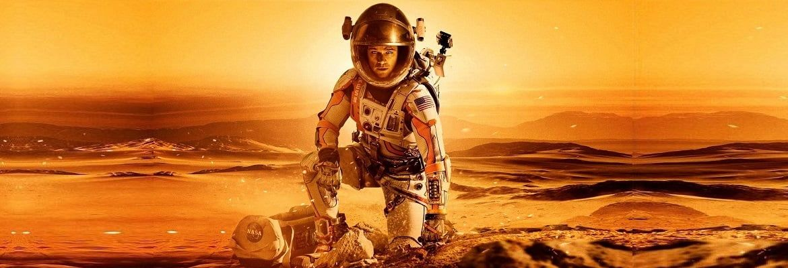

Вітаю! Ви прилетіли на планету фанатів космосу. Тут можна знайти багато цікавих фактів про Марс. І про справжній Марс, і про фантастичний Марс. Приєднуйтесь до нашої спільноти. У нас конретна місія на Марсі - це створити колонію в якій можна жити, вирощувати рослини і головне - ми тут зробимо школу програмування "Супер Логісти". Зустірнемось десь у Всесвіті!
Про Марс
Марс - також відомий як червона пленета, є четвертою планетою від Сонця і зараз не придатний до життя для людей без спеціального обладнання.
Чому марс червоний? - Марс має червоний колір через те, що на ньому було і зараз є багато заліза. Воно звісно ржавіє з часом. Тому Марс має ніби нескінченні пустелі, але вони не з піску, а з іржі.
Відео
Тут про марсоходи і бази.
Тут можна дізнатися про те, як було створено перше
зображення Марсу. Також про те, як намагалися знайти
життя на Марсі.
Тут можна дізнатися як сідав марсохід.
Марс в кіно
Люди дуже багато фантазують прос Марс, інші планети і весь космос. Тому в нас є багато фільмів про таке. Такі фільми як "Марсіянин", "Джон Картер", "До зірок", "Життя", "Місія на Марс", "Червона планета" і інші. Фільмів про космос дуже багато. Не можливо всі назвати чи сказити: я бачив всі фільми!
